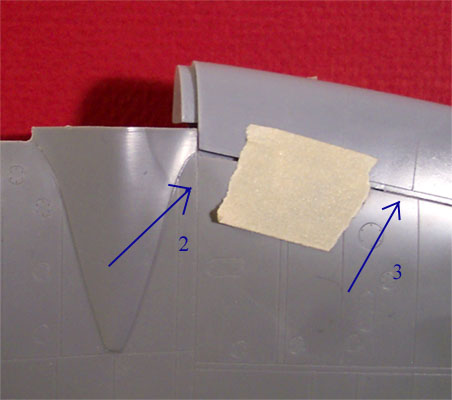
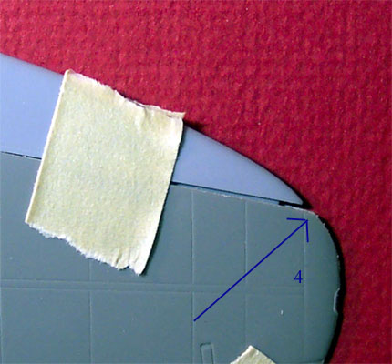

Conversion of the Monogram 1/48 He-111 H4/5 to an early He-111B Pedro using the Cutting Edge conversion kit.
Images, text and model Copyright � 2004 by Matt Swan
Project start date 12/26/03
This built model is SOLD
For this project I am using Monogram 1/48 scale kit #5509 of the Heinkel He-111 H4/5 which you can take a look at here and the Cutting Edge resin conversion kit #48446 to back date the model to an early �B� Pedro version from the Spanish Civil War. You can look at the Cutting Edge conversion kit and the decal package I�ll be using here.
The Cutting Edge instructions are a little vague in places so it is important to study all the parts carefully and think through your conversion process. Right away, while examining the wing pieces I found a problem, the left hand wing leading edge replacement piece has a nasty warp to it.
I am not sure if I will be able to remove the warpage from such a heavy piece of resin with the hot water method or not but will give it a try before going back to CE for a replacement. We�ll look at that piece again a little later. The fuselage pieces on the Monogram kit have a couple of sinkholes that will need to be filled also just behind the cockpit. No other part problems are apparent at this point in time.
The larger resin pieces such as the nose sections and the clear resin pieces are removed from their casting blocks with a cut-off wheel on my Dremel while the smaller, more delicate pieces are removed with a razor saw. The nose of the Monogram fuselage needs to be removed and this is the first area of decision. The CE instructions say to remove the nose at the indicated panel lines � well they don�t really indicate anything so you have to hold up the replacement piece and study the situation carefully. If you cut right at the panel line you will create a gap between the pieces that will need filling, rather you should cut about 1mm ahead of the panel line even with the forward slot for the wing spar. In the picture to the left one blue arrow indicates the panel line to pay attention to while the other indicates the slide track for the original kit gunners dome which has to be removed. The slide tracks for the original kit pilot access hatch have to be removed also. The kit nose is sliced off with the Dremel and cleaned up with a sanding stick. I test fit the forward bulkhead into the wing spar slots several times while cleaning up the cut area so as to not remove too much plastic. All the while I am doing this I am also considering the best approach to installing the four pieces that will comprise the new nose. Should I attach them to the fuselage sides then assemble the sides or should I assemble the sides then attach the new nosepieces?
Ultimately I have decided to assemble the fuselage as one step and assemble the nose pieces into a left and right section then attach them to the kit. While test fitting the new pieces I find some interference between the observer�s seat back and what looks to be a fire extinguisher molded into the right hand sidewall. It�s still early into the project so I will wait and see if this works itself out or not. Now I examine the belly of the kit fuselage looking for the panel lines to cut for the new gunners dustbin station. These panel lines are readily apparent and just to make life a little easier I mark the area with a magic marker before cutting. This area is also removed with the Dremel and cleaned up with alternate treatments of a razor knife and a sanding stick. Again, the replacement piece is test fit several times to each side of the fuselage while the clean-up process happens.
 I�ve washed all the pieces in warm soapy water then let them air dry before proceeding. Next I�ve removed the smaller cockpit pieces and attached the various levers to the floor pan and dashboard prior to painting. For most of you painting the interior of a Luftwaffe aircraft means RLM66 black-gray but this color requirement did not happen until 1941 while the aircraft I am modeling was in service in 1939 so it�s interior will be RLM 02 light gray. Control panels are done in black with details picked out with white, red and yellow enamels.
I�ve washed the finished pieces with a sludge wash based around Higgins brown ink and Grumbacher Ivory Black acrylic paste. The dash was done with RLM 66 and the instrument clusters done in black then the faces whited out. Reheat decals were placed over the instruments to finish it off.
I�ve washed all the pieces in warm soapy water then let them air dry before proceeding. Next I�ve removed the smaller cockpit pieces and attached the various levers to the floor pan and dashboard prior to painting. For most of you painting the interior of a Luftwaffe aircraft means RLM66 black-gray but this color requirement did not happen until 1941 while the aircraft I am modeling was in service in 1939 so it�s interior will be RLM 02 light gray. Control panels are done in black with details picked out with white, red and yellow enamels.
I�ve washed the finished pieces with a sludge wash based around Higgins brown ink and Grumbacher Ivory Black acrylic paste. The dash was done with RLM 66 and the instrument clusters done in black then the faces whited out. Reheat decals were placed over the instruments to finish it off.
The pilot and observer seats are finished and installed in the cockpit but the dash is not glued in yet � it will be placed after the cockpit assembly is attached to the fuselage and at least one side wall is in place to ensure that the sun shield is in the correct position. The interior floor structure for the aft gunner�s position is test fit then glued in place. I test fit the rear bulkhead at the same time so that there will be no conflict between the pieces in later assembly. The main pieces for the gunner�s dustbin are assembled and painted. I have left the seat pan off until the other painting is complete. It took me a few minutes but I finally figured out what the Cutting Edge instructions were referring to as the �B Stand� and got the dorsal gunners platform located and glued in place on the replacement ventral panel. After the wash had dried I dry brushed the interior pieces with Model Master Steel.
12/28/03
I�ve taken care of various mundane construction processes now like gluing together the stabilizer pieces and the main wheels. The tail wheel assembly has been painted, assembled and installed into the fuselage also. The Cutting Edge kit includes masks for not only the exterior windows but for the interior windows in the nose and let me tell you � this was a great idea. The clear nosepieces are of very different engineering then we usually see in the model industry. All the details are molded on the interior and the exterior is smooth. All the windows are recessed from the interior. I polished the exterior with some very, very fine sand paper then dipped both pieces in Future and let them cure overnight. Next I placed all the interior masks and then airbrushed the interior RLM 02. When I removed the masks the results were fantastic. I carefully added some wash to the interior details of these parts then super-glued them to the gray resin nosepieces to form my left and right side pieces.
Now that the tail wheel and the rear floor structures have been installed I can put the rear bulkhead in place, install the four rear fuselage windows (with Black Magic masks in place) and close up the main fuselage. Tenex 7R is my glue of choice when working with polystyrene and makes short work of this step. After the glue had done it�s job the seam is sanded and the bomb bay doors are glued in place. Next the resin cockpit assembly is super-glued in place. At this point I test fit the new nose pieces and once again I find interference between the observer seat and a fire extinguisher. This piece will have to be removed from the sidewall and relocated about 2mm forward of it�s original position. I also have some slight problems with a small piece of framing at the same area that needs to be notched to improve the fit.
In the picture to the far left you see the original nose piece with blue arrows indicating the two areas of interference. In the second picture is the nearly finished nosepiece with the fire extinguisher relocated and the framing notched out. There are still a few minor detail pieces to be added to the interior and the upper two windows will be installed after the nose has been completely assembled.
In the next picture we can see the main fuselage assembly with the right side nose piece in place, it is not glued but simply held in place by the structure itself at this point. Take note of the fuselage top, you can see that all the slide rails have been removed, the panel lines have been rescribed across the glue seam and where the Monogram kit had some sinkholes � they have been puttied and sanded. So far this is the only place that has needed any putty, I don�t think I will be so lucky as the conversion progresses.
12/31/03
As I move into the wing modification this conversion kit begins to show it�s teeth. Once again vague instructions from CE are hampering the work. The instructions state to cut off the wing leading edge on the indicated panel lines. From looking at the parts this seems to indicate a double line that runs the length of the top of the wing. I figured out that I must cut the leading edge off at the inner of the two panel lines. Okay, no problem doing that. Now looking at the bottom panel of the wing I see another single panel line that runs in the same location, or at least it looked like the same location � not.
In this shot we can see what happens after following these two panel lines. Fortunately it is a matter of not having cut off enough rather than having cut off too much. At arrow #1 there is a good quarter inch of overlap that needs correcting. On the lower panel at the engine cowling the panel line is at the correct starting point, it just ends at the wrong point. I taped the wing halves together and placed a small cut on the bottom half wing tip where it meets the top half wing tip then laid a piece of masking tape from the beginning point at the engine nacelle to the cut mark and scribed a new line to mark the additional area to be cut off. That solved the first problem.


When test fitting the resin pieces I found that things were not quite meeting up. To fix this problem the top wing leading edge must be cut into the engine nacelle just a little bit until you reach the panel line indicated by arrow #2. See arrow #3. The cut line at that point forms the second of the double panel line where the original cut was made, compare this to the uncut wing from your kit. Also, once the cut has been made you must sand some plastic off the inside of the wing along the cut line, both top and bottom, or the plastic wing will sit proud of the resin leading edge. The replacement leading edge does not extend all the way to the end of the original wing and you must reshape the wing tip (see arrow #4). You must also thin the wing material at the tip by sanding the inner surface prior to assembly.
That pretty much handles the problems centered around the main leading edge. The small section between the engine nacelle and the wing root has similar concerns. You can cut the top wing panel at the obvious panel line but the lower wing half has no line that can be followed. If you cut the line that looks right on the lower panel you will be in big trouble as you will have cut off TOO MUCH and that is difficult to fix. See arrow #5, that's exactly 1mm from the panel line to the cut line. The whole wing thing is looking good now (after 3 and a half hours of work) but I will not glue any of these parts together until I have test fit all this to the fuselage to ensure that everything meets up correctly. That forward wing spar is going to be a problem also, I can see that right now.
As I had mentioned in the beginning of this article I had a warped leading edge piece. Now this piece was labeled as the left hand piece but from everything I could see it was actually the right hand piece. It was not until I was actually working on the wing modification that it became apparent that Monogram had labeled the wings from the modeler�s point of view and not the pilots� as they should have. It seems that Cutting Edge was trying to conform to the kit labeling when they labeled their parts. Just one more item of confusion. Anyway, back to the warped piece. I heated up a bowl of water to 180 degrees Fahrenheit and let the offending piece soak in it for about five minutes to absorb the heat. I laid it on a flat surface and pressed it back into shape and held it while it cooled and the warp was removed. Later on as I worked on the wing I found more warpage in the resin engine-to-wing piece that will be corrected in the same manner.
1/2/04
I apologize if it seems that I am spending too much time on this wing but there is a lot of stuff happening with the wing and the directions really suck on the coverage of this area so in an effort to help out future modelers attempting this conversion I need to spend just a little more time on this subject. This next picture shows the tape demarcation for the new cut line on the bottom wing half. Once the tape is laid out I place a flexible steel ruler over the tape then scribe the line with my Xacto knife.
After a lot of test fitting and thinking about it I have finally glued the main wing panels together. The gear doors/bay walls have been glued in place but no resin parts have been glued in place yet. In the following pictures arrow #6 indicates the trim tab actuator that has to be removed temporarily. I carefully slice this off the wing and set it aside until the new extended trim tab has been installed. There is another actuator underneath the wing but if you are careful about the removal of the molded in trim tab you should not have to mess with it. Arrow #7 illustrates the unmodified wing tip. In this shot we are looking at the left hand wing, which all the instructions identify as the right wing. In the next picture the trim tab has been removed. Arrow #8 indicates one of several engraved hinges that will have to be filled and sanded. Arrow #9 indicates the mark from removing the upper trim tab actuator � don�t sand this off as you will need it to help locate the actuator when you reinstall it. Area #10 shows the reshaped wing tip both front and back, yes the backside has been sanded to create a more elliptical shape.
And finally, here you can see the new, extended trim tab in place with the actuator reinstalled. The kit instructions at this point tell you to install the rhomboidal aileron baffles in the indicated positions under the wing. Guess what, there are no indicated positions! There are no pictures of the underside of the wing whatsoever! For this I needed to turn to the experts on Hyperscale and those most helpful people produced information that indicates this baffle should be mounted just forward of the aileron and about three quarters of an inch from the outside edge of the landing flap � thanks Peppy.
 1/4/04
1/4/04
After two more evenings of modeling time devoted to the wings, many dry fit sessions and a review on how to swear like a sailor the wings have been assembled � mostly. Here we can take a quick review of all the various modifications and some of the problems encountered. Arrows numbered 11 illustrate the many areas where I had to use repeat applications of super-glue and accelerator to fill gaps. Arrows numbered 12 indicate the engraved hinges that have been filled with Squadron White Putty. On the lower side of the wing the hinge material had to be cut out of the hinge line to make it a continuous engraved line. Arrow number 13 indicates one of about four different areas where very small gaps had formed along the new leading edge. These were filled by putting some putty on a cotton swab with some acetone based fingernail polish remover and then rubbing it into the gap. Arrow 14 is the new extended trim tab and 15 is the actuator. Arrow 16 is the rhomboidal baffle installed forward of the aileron on the lower side of each wing.
All the super-glue fills were shaved with a Xacto leaf blade then sanded smooth. After all puttying, filling and sanding had been finished I went over all the panel lines with the tip of my #11 Xacto blade and cleaned the debris out of them. Both wings were then wiped down with a Micro Sheen tack cloth. I still have to install the engine nacelles and radiators but that will wait until after the gear bays have been painted.
The CE instructions talked about cutting or grinding a slot into the back side of the leading edge pieces to accept the forward wing spar. Screw that! I�ve had enough of these wings already and simply chopped the forward wing spar off even with the fuselage wall and will use plenty of super-glue to attach the wings. It has been a lot of work and a lot of headache but I think the wings are looking pretty nice at this point. They also dry fit well to the fuselage with that wing spar removed.
1/6/04
The next item for some attention is the engine nacelle. I want to be able to have the propellers mobile. To achieve this I locate the center of the cowling face then drill it out to a size equal to the original kit prop shaft pin. After figuring this all out and doing it I discovered that the interior of the engine nacelle is already marked with a small stub of the correct size in the correct position to assist the modeler. And I felt so good about my centering job too. All right then, now both nacelles are mounted to the wings and the nacelle extensions are place underneath. All the gaps are filled with superglue and trimmed up.
I�m getting ready to attach the nose pieces and wanted to include a picture of the left side equipment here because it will be about impossible to see once everything is in place. Getting these nosepieces to meet up with the fuselage and with each other is no easy task. I have a good-sized gap along the bottom and had to stress the top to get it to meet. Once again I�m filling with superglue and trimming seams. The final piece of glazing to go onto the nose is salvaged from the kit nosepiece. I have cut it off and sanded the edges smooth and then test fit it. Guess what � it fit perfectly! I can�t glue it in place yet as there are still a few detail pieces to go into the nose but it�s nice to know that I will not have to fight with this piece.
Now that the nose seams have been finished off I�m ready to attach the wings. I coated the inner wing joint areas that are resin with superglue and let that tack the wing in place then applied Tenex 7R along the rest of the seam. The resulting joint was finished by fencing the seam with tape then applying Squadron White putty to it and then smoothing it out with fingernail polish remover. This next shot is of the underside just before the putty is applied.
Notice that the engine radiators are not installed yet, I still haven't gotten around to painting the gear bays yet - soon. While that dried down I attached the elevators and did some detail painting on the remaining interior pieces like the bombardier�s couch.
1/12/04
The Bombardier�s couch went right in and there were a few odd little control boxes that I placed and the exterior bomb-sight mechanism. I painted the kit machine guns and set them aside to dry. The instrument panel gets installed at this point also - a very fiddly process and took about five minutes to get placed where I wanted it to be but I am glad I waited until now to do it. I used the Cutting Edge masks for the nose windows then turned my attention to the main cockpit windshield. This is kind of an odd piece, cast of clear resin but very flexible once cut off the casting block. It took several test fittings and sanding sessions to get a good fit but finally it was fit, Futured and glued in place. After the seams were touched up I applied the CE masks to this piece also.
Now I start work on the remaining clear resin piece on the nose. This part is for the two top center panels and is provided as a single, separate piece to be installed just before the nose dome goes on. The piece in my kit has several micro-bubbles in it and feels slightly sticky as if the resin did not set completely. I Future the part before working on it to try to prevent fingerprints from being embedded into the material or having dust particles embedded into it while handling. On the first test fit it is apparent that it will not fit as designed. After a few trimming sessions with a diamond needle file I decide the best way to approach this will be to separate the two panels, remove the cast lip around the edges and install them as single panels. This approach does indeed make life easier. One more test fit then they are masked with masking tape and installed. Odd thing, CE gives us this huge masking set but does not include masks for these two panels.
On to the final piece, the nose dome. Remember, this is cut from the Monogram kit nose cone. The gun is installed and the dome it test fit � looks good. Now, to mask first, the CE mask for this piece is very ungainly and I decide to mask the dome with strips of masking tape instead. This works out fine for me, and the dome is attached with Testors Clear Parts Cement.
Finally this bird makes it to the paint room. The landing gear bays are shot with RLM 02 and so are the interiors of the engine radiators. The radiator elements are painted with Gunze-Sangyo Burnt Iron and washed. The interiors of the gear bays are washed then dry brushed with Model Master Steel. Now the radiators are installed. From here I start stuffing tissue paper into various openings such as the top gun position and the ventral gun position. Both front and backsides of the radiators are stuffed and the gear bays are stuffed. The insides of the gear doors are covered with some masking tape.
Doesn't look like your standard 111 anymore, does it?
The picture above was taken with the landing gear held in place by the gear doors. They were then removed for the painting process. I start this process by prepainting the clear parts with Gunze-Sangyo RLM 02 then shifting to Model Master enamel primer gray cut 25% with lacquer thinner and shooting the entire aircraft. I have traced all the engraved panel lines with the tip of my razor knife to clean them out, wiped everything down with my micro sheen tack cloth and blown the model off with compressed air before painting and now whenever I handle it I am wearing cotton inspection gloves so I cannot leave any fingerprints or finger oils on the surface.
In between painting sessions I will take care of some of the smaller subassemblies like the dorsal and ventral gun positions, the propellers and the exhaust shrouds.
1/14/04
Prior to closing up the fuselage I had test fit the ventral or �dustbin� gun and had needed to sand just a little off each side of the transit block to allow it to fit snugly into the track on the dorsal gunners �B Stand�. This is important because once complete the dustbin will not be glued in place but simply rest in position so as to be adjustable. It will not fall out because the upper edges of the gun fixture need to be compressed to allow it to slide into the fuselage. As you can see in the picture to the right the gun station has been completed. That is the Monogram gun and everything else is CE resin. The seat itself did present some difficulty needing to have both back corners trimmed to fit. As far as paint goes we have an overall RLM 02 with a sludge wash and a dry brush of steel. The belts were done in a very light gray with silver hardware and the gun was done with Gunze-Sangyo burnt iron. The bottom of the fixture will be done with RLM 77 to match the exterior of the aircraft.
The next subassembly to look at is the propellers. If you will recall previously I had drilled out the engine nacelles to accept the Monogram kit propeller shaft. The spinner covers and backing plates are being replaced with Cutting Edge pieces and we are using the Monogram kit propellers and propeller shafts. One spinner had a concealed air bubble in it that became exposed when I cut the casting block off of it and that had to be filled with super-glue. The backing plates had to have the central hole enlarged with a round diamond file until the propeller shaft would slide easily through it.
When test fitting the propeller into the spinner cover I found it to be a very tight fit, in fact on further examination it would not set far enough into the spinner cover to allow the back plate to rest in place. I deepened each slot for the propeller blades with an oval diamond file (arrow #17) and shaved the inside edges at an angle to help the blade cuff to clear. Another test fit and the back plate is still not quite where I want it. Now I look at the back plate and file the rounded area that the back of the blade seats into. This will accomplish two things; it will help the back plate to seat and it will give me just a little more length on the propeller shaft to insert into the engine nacelle. As they are pictured here all the pieces are simply resting in place so the fit is now pretty good.
How�s the painting been going you ask? Pretty darn good. I�ve got the first coat of primer on the model and dried down. There were a few seam areas that needed touching up and a couple of small spots that needed a little more fill but that�s why we prime � to find these things now rather than later. I had also been giving the exhaust shrouds some thought while the first coat of primer was drying. I didn�t want to be messing around with Superglueing these on after my paint job is complete. The solution I came up with was to glue the shroud in place with the exhaust stacks held in place, hit it with some accelerator then remove the stacks. This seemed to work pretty well. After these items had been addressed I laid some more primer on it and then applied some Testors flat enamel white cut with lacquer thinner to the tail and the wing tips.
You can click on right hand picture to view a larger image if you like. In the left hand picture you can see the exhaust shroud in place on the engine nacelle. I would also like to direct your attention to the top two windowpanes on the nose. Those are the two that were so difficult to place during assembly. Another item I want to point out is that with the nose dome being masked with tape rather than the Cutting Edge mask it makes it look like it sits proud of the rest of the fuselage, it does not. It�s just an optical illusion.
Tonight�s session will definitely make a difference in the overall look of the model. I shall mask the wingtips and rudder tonight and mix my paint (RLM 77). Once that is on I can install the landing gear and put some Future on the day after that. The anticipation is almost more than I can bare.
1/16/04
It has been two days of serious modeling fun. I began by masking the white wingtips and rudder off with strips of masking tape and attaching the upper and lower aerial masts. I had intended to paint the aircraft RLM 77 but this is a very difficult color to find premixed. I did find an enamel from Testors but it had a very blue look to it. Ultimately I had to go back to my RLM paint chips and mix to match. I started with Polly Scale RLM 76 and added Polly Scale Uniform Gray to it in small quantities until I had a dry paint spot that matched my paint chip. I made sure that I mixed up about two ounces of paint so that I would have plenty to finish the job � heaven forbid that I run out of a custom mixed paint 95% of the way through this. Off to the paint room!
After a quick dusting with compressed air she got three light coats of RLM 77. I removed the masks from the white areas within the hour, did some little paint touch-ups with a brush and installed the completed dorsal gun position. All the tissue packing was removed, the landing gear were installed and I set her aside to dry for the night. The next day during my lunch break (yeah, I have a regular job) I coated it with Future floor polish. After a five-hour drying period I began to apply the decals. I am using a combination of the basic stencils that came with the Monogram kit and the Cutting Edge �Pedro�s in Spain� sheet for the Condor Legion of the Spanish Civil War. The Monogram decals have some nasty film on the decal paper that lifts off in chunks when the decal is wet. I found that I had to rub the decal with my fingertip in water immediately to flush off this film then let it soak for a few for the decal to lift from the paper. The CE decals behaved very nicely and gave me no trouble at all. All the decals responded very nicely to Micro-Sol setting solution. When applying the decals to the rudder and fuselage I propped the tail wheel up to level the plane and make it a little easier to keep all the decals orientated properly. To keep the wing tip national emblems in the proper orientation I measured from the white edge to the tips of the white cross giving each one a clearance of ten millimeters. Overall I spent about three hours placing decals and applying setting solutions.
She�s turning into one hot Spanish babe of German ancestry. Once the decals have had a day to dry thoroughly I will seal everything with Future and begin the weathering process.
1/19/04
Another coat of Future has dried down now and the weathering begins. I�ve mixed my standard sludge wash of Grumbacher Ivory Black, Higgins brown ink, liquid dish soap, Liquitex flow aid and lots of water. This has been applied to all the panel lines and then wiped with a damp paper towel compress. The fuel caps and service ports had another drop of wash placed on them and allowed to dry then I dampened my fingertip, placed it firmly on the dried spot and gave it a quick wipe to the rear to create the streaking effect. The aerial is made from invisible thread drawn across a black permanent marker and super-glued in place.
The exhaust stacks were airbrushed with Polly Scale rust and the open ends were touched with Tamiya flat black then they were installed. They slide nicely into place with no problems at all. Exhaust staining was a two-part process; first a base mark was laid down with my airbrush using Tamiya X-19 smoke and then I brushed ground brown, gray and black chalks over it. One more trip to the paint room for a coat of Polly Scale clear flat, you have to take care not to blow flat paint in through the upper or lower gun stations as it will fog the insides of the four fuselage windows.
While that was drying I airbrushed the propellers RLM 70 black green. The hubs were done with Model Master Steel. The spinner covers got a good coat of Testors flat white then were masked for the black strip to be applied. The interiors of the spinners were done with RLM 02. By this time the clear flat was dry to the touch and all the window masks were removed. There was a little masking glue left behind in a few spots which was removed with a toothpick that had one end sliced into a wedge and dipped into Goo-Gone. It is almost done, two items left; the dorsal gunner�s windscreen and the landing light lens. The gunner�s windscreen suffered from the same sticky effect that the top nose glazing had. It had to be handled carefully to not leave fingerprints embedded into the material. The Monogram kit lens cover apparently is intended to be placed into the wing fitting but it is way too small. I cut down a plastic sequin for a landing light and made a new lens cover from some clear plastic card. Once cut to the proper dimensions I folded it across a paintbrush handle then held it over a light bulb to lock in the new shape � worked like a charm.
The VDM prop logo decals were placed on the propeller blades and they were given a good brush coat of Future. Once the Future had dried the propellers were assembled and snapped into place.
The ventral gun position is just snapped into place, for photographs on the ground I have removed it so it looks like it�s in the retracted position. For scene accessories I have the crew from a Pro Modelers Me-410, a German pilot and ground crew member from Verlinden and an old Renwal 1931 Cadillac Sport Phaeton � I think it could pass for a German Staff car.

Click on any of the above pictures to view a larger image.
So in conclusion here are some key points and observations:
1 The Cutting Edge directions leave something to be desired � not very comprehensive.
2 Care must be taken when cutting up the wing, new line must be scribed for lower panel cut line.
3 Cut kit nose off slightly forward of indicated panel line.
4 Fire bottle at observer�s position must be relocated.
5 Chop off those resin forward spars and glue the wings directly to the fuselage.
6 Gray resin nosepieces don�t fit well.
7 Some clear resin pieces suffered from incomplete setting process, possible from poor material mixing. Otherwise the resin pieces were of good quality and good workmanship.
8 Lens for landing light must be fabricated from stock material.
9 Some parts displayed warpage and others required quite a bit of trimming to fit properly.
10 The Monogram decals have a film that must be rubbed off before the decals have loosened from the paper.
11 The Cutting Edge decals behaved great with no problems at all.
12 While the clear resin piece for the main canopy is very clear and gives a good impression, the nose clear resin pieces create a lot of optical distortion.
Overall this makes into a very nice kit, if the instructions were better it would have been a much more pleasant build. While it may seem like I cranked this out in record time, during the first week I was off work for the holidays and devoted about 45 hours to the kit. Over the next three weeks I put another 60 to 70 hours into the modeling process, which means this is an 100 to 110 hour conversion project. I love the look of the model but doubt that I would attempt another one of these in the near future.
Just a last note about this aircraft. I have been a modeler since the earliest days; my first model was a Revell submarine built in 1969 with my Dad. Like many of us by time I was in 11th grade the models kind of fell to the wayside in favor of cars, girls, and later, college. About twelve years ago Monogram released the He-111 and that is what drew me back into the fold. This is it - the He-111 I built back then on the dining room table with rattle cans of paint. Sitting next to her is the He-111B converted with the Cutting Edge set and painted with a Badger 360 airbrush using RLM colors from Gunze-Sangyo. What do they say? You've come a long way, baby!
While the cabin is obviously the most notable difference in this shot you can also see the difference in the leading edge shape of the wing.


{kind=link}
{kind=link}
{kind=link}
{kind=link}
{kind=link}
{kind=link}
{kind=link}
{kind=link}
{kind=link}